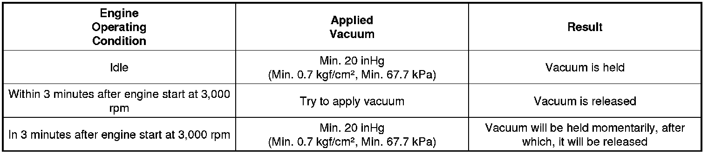
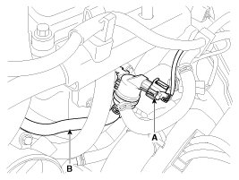
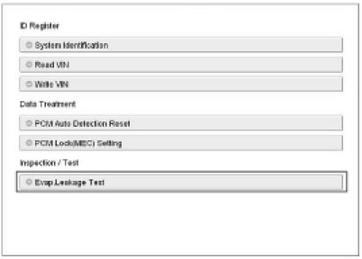
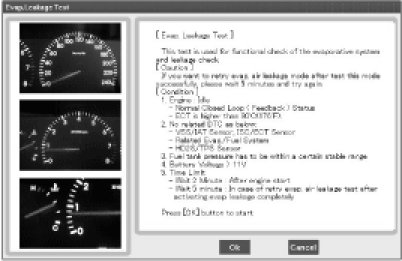

Evaporative Emissions System: Testing and Inspection
Inspection
[System Inspection]
1. Disconnect the vapor hose from the intake manifold and connect a vacuum pump to the nipple on the intake manifold.
- At Cold Engine [Engine Coolant Temperature < 60°C(140°F)]
2. Check the following points with applied vacuum at the purge control solenoid valve (PCSV).
- At Warmed Engine [Engine Coolant Temperature > 80°C(176°F)]

[PCSV Inspection]
1. Turn ignition switch OFF and disconnect the negative (-) battery cable.
2. Disconnect the PCSV connector (A).
3. Disconnect the vapor hose (B) which is connected to the intake manifold from the PCSV.

4. After connecting a vacuum pump to the nipple, apply vacuum.
5. With the PCSV control line grounded, check the valve operation with battery voltage applied to the PCSV(Open) and removed(Closed).
6. Measure the coil resistance of the PCSV.
Specifications:
22.0 - 26.0Ohms [20°C(68°F)]
[EVAP. Leakage Test]
1. Select "Evap. Leakage Test".

2. Proceed with the test according to the screen introductions.
